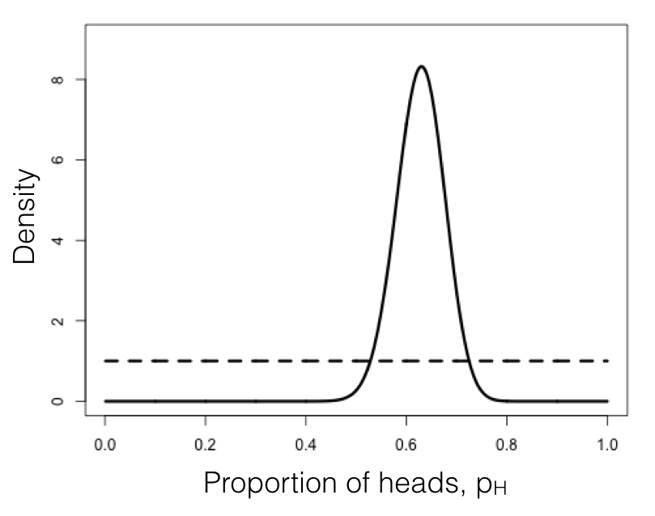

Recommended Reading

Decoding Genomes (Stadler et al., 2024)
- Chapter 7: Statistical testing
Phylogenetic Comparative Methods (Harmon, 2019)
- Chapter 2: Fitting statistical models
(G. E. P. Box, 1979)
How do we tell which?
Every time you fit a model to biological data, you face a choice:
A bigger model can always fit the observed data better. The question is:
When does an extra parameter improve a model enough to justify its inclusion?
That is what this lecture answers.
Three tools you'll meet today
Next lecture applies all three to evolutionary trait data, and ends with a paper whose punchline is "$\Delta\mathrm{AIC}_c = 162.6$".
A typical alignment fit by maximum likelihood under four nucleotide models. More-parameterised models fit better, but do they fit enough better?
| Model | $k$ | $\ln L$ | AIC | $\Delta$AIC | weight $w_i$ |
|---|---|---|---|---|---|
| JC | 1 | $-2100.0$ | 4202.0 | 35.0 | $\approx 0$ |
| K80 | 2 | $-2085.0$ | 4174.0 | 7.0 | 0.022 |
| HKY | 4 | $-2079.5$ | 4167.0 | 0.0 | 0.715 |
| GTR | 8 | $-2076.5$ | 4169.0 | 2.0 | 0.263 |
This is what IQ-TREE's ModelFinder and jModelTest do automatically, across many more models.

Kass & Raftery (1995) scale for $2\ln B_{12}$:
| $2\ln B_{12}$ | Evidence for $H_1$ |
|---|---|
| 0 to 2 | Not worth more than a bare mention |
| 2 to 6 | Positive |
| 6 to 10 | Strong |
| > 10 | Very strong |
| Method | Compares | Key assumption |
|---|---|---|
| Likelihood Ratio Test | Nested models only | Null model is true |
| AIC / AIC$_c$ | Any models | Truth is more complex than any model |
| Bayes Factors | Any models | True model is among candidates |